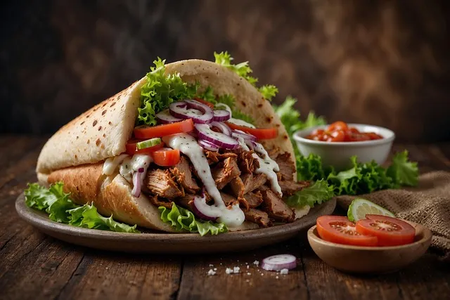

Kebab

Opis
Pierwsze pisemne źródła dotyczące kebabu pochodzą z X wieku, z kompendium kulinarnego „Kitab al-Tabikh” („Księga dań”), które zostało znalezione w Bagdadzie, na terenie dzisiejszego Iraku. Tradycja tego dania liczy zatem ponad tysiąc lat, jednak dopiero na przełomie lat 60. i 70. ubiegłego wieku pojawiło się ono w Europie. Mówi się, że pierwszy lokal podający tę potrawę powstał w Berlinie lub w Londynie, ale silną konkurencją okazuje się także Kebab Sopocki, który działa od 1970 roku. Największy wzrost popularności kebabu przypadł na ostatnią dekadę XX wieku. To wówczas Polska otworzyła się na Zachód i przyjęła od niego dużą część kultury kulinarnej – szczególnie tej w wydaniu ulicznym.
Choć kebab jest ściśle związany z kuchnią Bliskiego Wschodu, to podobnie jak pizza czy burgery, na przestrzeni ostatnich dekad stał się kulinarnym symbolem globalizacji. Serwujące go lokale znajdziemy niemal wszędzie. Ma to swoje wady i zalety: z jednej strony przyczynia się do popularyzacji kuchni bliskowschodniej, z drugiej – przetwarza ją, upraszcza i przykleja jej łatkę fast foodu.
Składniki
- mąka pszenna typ 650 – 400 g
- ciepła woda
- jogurt naturalny
- sól
- oliwa
- drożdże świeże – 25 g / drożdże suche – 7-8 g
- żółtko do posmarowania ciasta
- sezam do posypania ciasta
Jak zrobic bulke
- Wsyp mąkę do miski.
- Przygotuj rozczyn. W tym celu wlej ciepłą wodę do szklanki, dodaj drożdże oraz jedną łyżkę mąki (odmierz ją z ilości wcześniej wsypanej do miski). Dokładnie wymieszaj, do momentu aż w szklance nie będzie żadnych grudek drożdży ani mąki. Odczekaj 5-10 minut, aby drożdże zaczęły działać.
- Po upływie 5-10 minut wlej do miski jogurt naturalny oraz zawartość szklanki z przygotowanym wcześniej rozczynem. Dodaj sól i oliwę.
- Całość wymieszaj łopatką. Gdy składniki wstępnie się połączą, przełóż ciasto na blat i zacznij wyrabiać je rękami. Jeżeli ciasto mocno klei się do rąk, można je delikatnie podsypać mąką.
- no i brzegi miski wysmaruj odrobiną oliwy. Gotowe ciasto przełóż do miski. Całość przykryj folią spożywczą i odczekaj godzinę, aż ciasto wyrośnie. W tym czasie przejdź do przygotowywania pozostałych składników.
- Po godzinie zagrzej piekarnik do temperatury 200°C, grzanie góra-dół. Blachę z piekarnika wyłóż papierem do pieczenia.
- Przełóż ciasto na papier do pieczenia i delikatnie je rozwałkuj – tak, aby uzyskało okrągły kształt o średnicy ok. 28-30 cm.